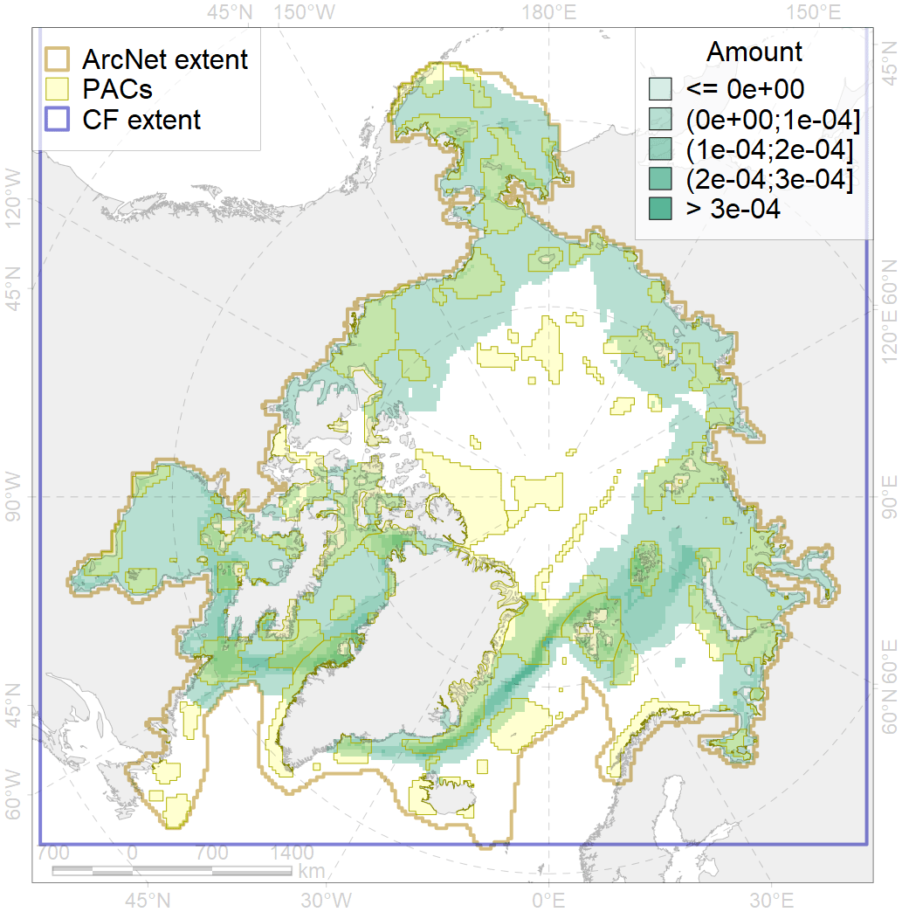
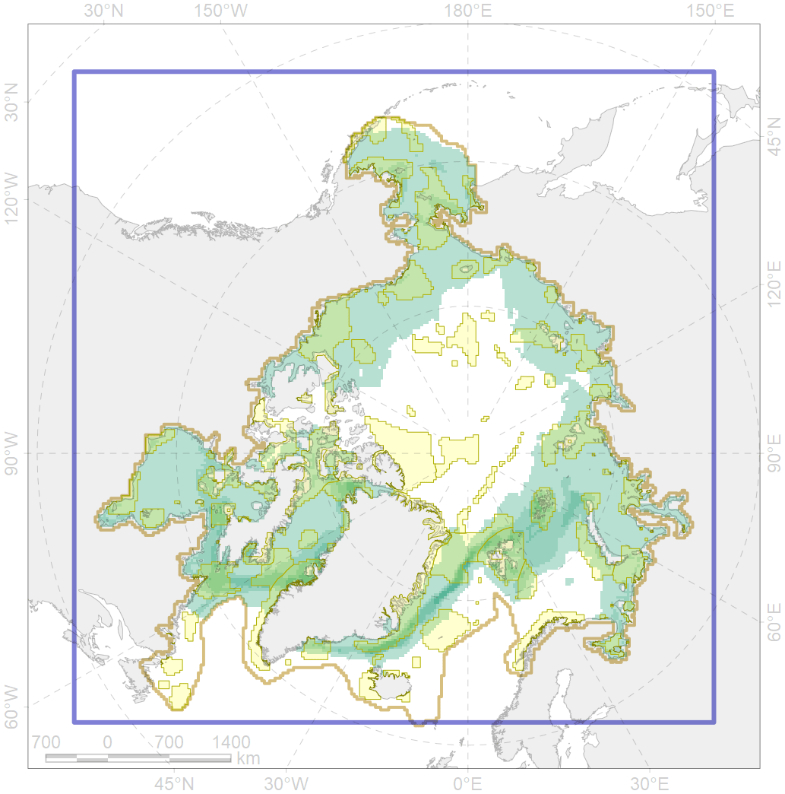

5112

| CF code | 5112 |
| CF name | Arctic Cetaceans (beluga, bowhead, narwhal) winter habitats as predicterd by MIZ |
| Time Period | 1979 - 2018 |
| Source(s) | |
| Seasonality | November-June |
| Depth Horizon | 0-1500 |
| Methodology | Remote sensing |
| Use Restrictions | Open source |
| Author Name | Platonov, Solovyev, Shpak |
| Notes | |
| Scenario’s Target | 0.4 |
| Target Achievement | 0.487 (Scenario: 121.7%) |
| PAC | Share of the Total Amount within the PAC | Share of the Target Achievement for the ArcNet | PAC’s Contribution to the Target Achievement |
|---|---|---|---|
| 1 | 0.0% | 0.0% | 0.0% |
| 2 | 0.1%0.2% | 0.2%0.2% | 0.2%0.2% |
| 3 | 1.5%1.6% | 3.5%3.7% | 2.9%3.0% |
| 4 | 0.3%0.4% | 0.7%0.8% | 0.5%0.6% |
| 5 | 3.1%3.2% | 7.1%7.3% | 5.9%6.0% |
| 6 | 0.0%0.0% | 0.0%0.0% | 0.0%0.0% |
| 7 | 0.2% | 0.4% | 0.4% |
| 8 | 0.1%0.1% | 0.2%0.2% | 0.2%0.2% |
| 9 | 0.0%0.0% | 0.0%0.0% | 0.0%0.0% |
| 10 | 0.0%0.0% | 0.1%0.1% | 0.1%0.1% |
| 11 | 0.2%0.2% | 0.4%0.4% | 0.3%0.3% |
| 12 | 0.3%0.3% | 0.6%0.6% | 0.5%0.5% |
| 13 | 0.1%0.1% | 0.1%0.1% | 0.1%0.1% |
| 14 | 0.6%0.6% | 1.2%1.2% | 1.0%1.0% |
| 15 | 0.0%0.0% | 0.0%0.0% | 0.0%0.0% |
| 16 | 0.3%0.3% | 0.7%0.7% | 0.6%0.6% |
| 17 | 0.0%0.0% | 0.0%0.0% | 0.0%0.0% |
| 18 | 0.0%0.0% | 0.0%0.0% | 0.0%0.0% |
| 19 | 0.5% | 1.1% | 0.9% |
| 20 | 1.0%1.1% | 2.5%2.6% | 2.1%2.1% |
| 21 | 0.8%0.8% | 1.8%1.9% | 1.5%1.5% |
| 22 | 2.6% | 6.2% | 5.1% |
| 23 | 0.1%0.1% | 0.3%0.3% | 0.2%0.3% |
| 24 | 0.0%0.0% | 0.0%0.1% | 0.0%0.0% |
| 25 | 0.0%0.0% | 0.0%0.0% | 0.0%0.0% |
| 26 | 0.4%0.5% | 0.9%0.9% | 0.7%0.8% |
| 28 | 0.0%0.0% | 0.0%0.0% | 0.0%0.0% |
| 29 | 3.6%4.1% | 8.5%9.5% | 7.0%7.8% |
| 30 | 4.4%5.0% | 10.8%12.1% | 8.9%9.9% |
| 31 | 0.9%1.0% | 2.0%2.3% | 1.7%1.9% |
| 32 | 3.7%3.8% | 7.9%8.0% | 6.5%6.6% |
| 33 | 0.0%0.1% | 0.1%0.2% | 0.1%0.1% |
| 34 | 0.1%0.1% | 0.2%0.2% | 0.2%0.2% |
| 37 | 0.0%0.0% | 0.1%0.1% | 0.0%0.0% |
| 41 | 0.0%0.0% | 0.0%0.0% | 0.0%0.0% |
| 42 | 0.7%0.7% | 1.4%1.4% | 1.2%1.2% |
| 44 | 3.7%4.3% | 8.9%10.2% | 7.3%8.4% |
| 45 | 2.7%2.9% | 6.5%7.1% | 5.3%5.8% |
| 46 | 0.5%0.5% | 1.0%1.2% | 0.8%1.0% |
| 47 | 0.4% | 1.0% | 0.8% |
| 48 | 0.1%0.1% | 0.1%0.1% | 0.1%0.1% |
| 49 | 0.2%0.2% | 0.4%0.4% | 0.3%0.3% |
| 50 | 0.0% | 0.1% | 0.0% |
| 51 | 2.3%2.6% | 5.7%6.3% | 4.7%5.2% |
| 52 | 1.2%1.3% | 3.1%3.3% | 2.5%2.7% |
| 54 | 0.0%0.0% | 0.0%0.0% | 0.0%0.0% |
| 59 | 0.0%0.0% | 0.0%0.0% | 0.0%0.0% |
| 60 | 0.9%0.9% | 1.9%1.9% | 1.5%1.6% |
| 61 | 0.0% | 0.0% | 0.0% |
| 62 | 1.7%1.7% | 4.1%4.1% | 3.4%3.4% |
| 63 | 0.0%0.0% | 0.0%0.0% | 0.0%0.0% |
| 65 | 0.0%0.0% | 0.0%0.0% | 0.0%0.0% |
| 66 | 0.3%0.3% | 0.7%0.7% | 0.6%0.6% |
| 67 | 1.1%1.1% | 2.4%2.4% | 1.9%2.0% |
| 68 | 0.1%0.1% | 0.2%0.2% | 0.2%0.2% |
| 69 | 0.4%0.4% | 0.9%0.9% | 0.7%0.7% |
| 70 | 0.7%0.7% | 1.5%1.6% | 1.3%1.3% |
| 71 | 0.6% | 1.3% | 1.1% |
| 72 | 0.0%0.1% | 0.1%0.1% | 0.1%0.1% |
| 73 | 1.4%1.5% | 3.3%3.3% | 2.7%2.7% |
| 74 | 0.0%0.0% | 0.0%0.0% | 0.0%0.0% |
| 75 | 0.0%0.0% | 0.0%0.0% | 0.0%0.0% |
| 76 | 3.9%3.9% | 9.2%9.3% | 7.6%7.6% |
| 77 | 0.0% | 0.0% | 0.0% |
| 83 | 0.0%0.0% | 0.0%0.0% | 0.0%0.0% |
| inner | 48.0%51.2% | 111.5%118.3% | 91.6%97.2% |
| outer | 51.9%55.5% | 10.2%17.8% | 8.4%14.6% |
| † supplement values are for area consistence whereas principal values are for Accenter compatible gridded stats |